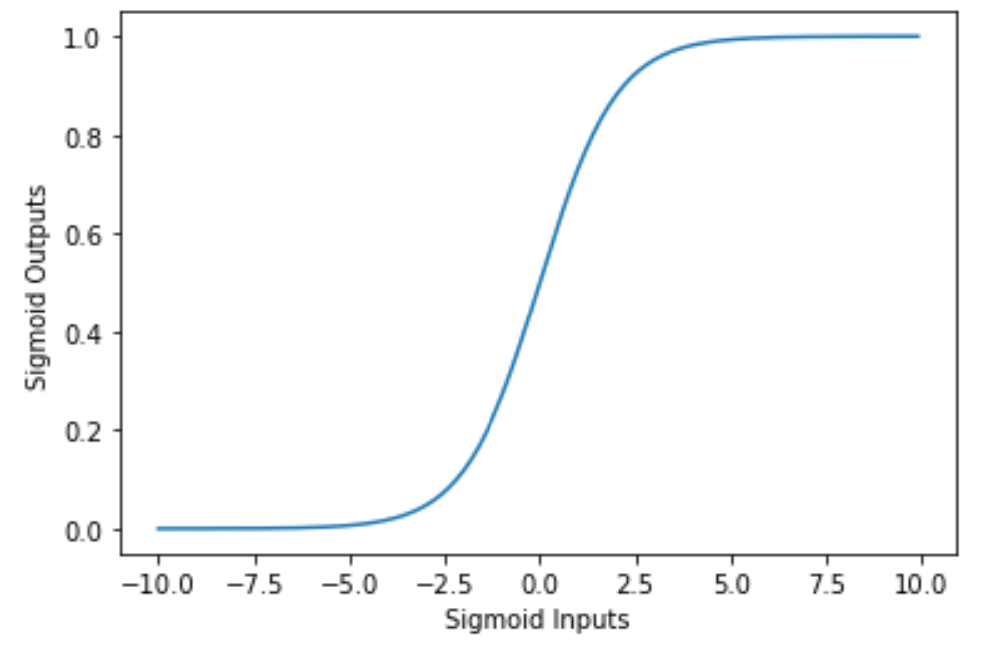

传统AI安全
算法分类
需要明确的是， 机器学习这一范围是最大的，他包括了 机器学习 和 深度学习 ，以及后续衍生而出的更多参数的大模型算法。
我们可以从三个常见角度对机器学习算法进行分类：
按照参数数量划分
-
机器学习：这类算法往往使用很少量的参数，模型结构简单，训练速度很快，在
python语言中最常见的库就是scikit-learn，这里封装了线性回归、决策树、k-近邻算法以及支持向量机算法。 -
深度学习: 这类算法发展的很早，甚至有的比机器学习算法还要早，但当时碍于计算机算力不发达，只停留在论文阶段，直到2010年后才逐渐广泛应用。
深度学习算法几乎都是基于神经网络的，参数数量一般远大于传统机器学习算法，能够接受更复杂的特征。耳熟能详的有卷积神经网络体系，循环神经网络体系。这两大体系 中间水了相当大的论文，前者最有名的是
resnet，后者最有名的是LSTM。
按照训练条件划分
- 有监督学习： 训练数据带有明确标签，模型通过学习输入到标签的映射关系。常常用于分类问题和预测问题。
- 无监督学习： 训练数据不带标签，我们需要模型从数据中发现结构、模式或者分布特点。常常用于聚类分析、异常检测（检测离群点）、PCA(主成分分析，常常用来降维)。
- 还有半监督学习、自监督学习这种过渡的形式。
按照学习目标划分
- 分类问题：用户在训练时，输入数据和该数据对应的标签，训练模型参数；使用模型时（推理），用户仅仅输入数据，需要模型给出对应的标签以完成分类。标签是离散的。
- 识别垃圾邮件，对图片进行分类。
- 回归问题：模型的输出是连续数值，目标是预测具体数值大小
- 预测房价、股票走势
- 生成问题：模型根据输入生成新的数据样本：
- 图像生成、文本续写
常见的机器学习术语
-
训练：使用已知样本，调整模型参数，一般会定义损失函数（回归问题是均方误差，分类问题是交叉熵损失），然后就会将问题转化成一个优化问题→将损失函数尽可能最小化，此时模型就会在已知样本上表现更好。
-
推理：将新数据输入给训练好的模型
-
泛化：模型不仅在训练数据上表现好，还能在未见过的新数据上也表现良好，这就是泛化能力。
- 理想状态：低训练误差 + 低测试误差 → 模型具有良好泛化能力。这个经过论证是不现实的
-
过拟合：模型在训练数据上表现非常好，但在新数据上效果很差。
-
欠拟合：模型过于简单，无法捕捉数据中的规律，训练误差和测试误差都很大。
-
准确率：预测正确的样本数占总样本数的比例。
$$ 准确率 = \frac{预测正确的数量}{总预测数量} $$
- 适用场景：分类任务中，正负样本数量大致平衡时。
-
召回率: 在所有“真实为正”的样本中，被模型正确预测为正的比例。
$$ 召回率 = \frac{真正(TP)}{真正(TP) + 假负(FN)} $$
- 适用场景：我们更关注找到所有相关项，如疾病筛查、垃圾邮件检测。
-
精确率：在所有被预测为正的样本中，实际真正为正的比例。
$$ 精确率 = \frac{真正(TP)}{真正(TP) + 假正(FP)} $$
-
训练集：用于训练模型的数据。
-
验证集：用于模型调参，检测是否过拟合。
-
测试集：用于最终评估模型在新数据上的表现，不能参与训练或调参。
没有一个万能的模型，需要根据实际情况来选择合适的模型。
- 模型参数越多，越复杂，拟合能力会越好，也更容易过拟合，可解释性也越差，需要的样本也越多。如果我们使用少量的数据集，而恰好这些数据集分布很集中，并且没有覆盖真正的分布空间，那模型就很容易过拟合，泛化能力特别弱。
- 根据输入选择模型也是一个很好的思考点。对于图像类问题，我们常常选择
CNN系的模型，比如残差神经网络。将图片按照RGB通道形成二维矩阵，然后作为模型的输入。常常用来解决分类问题。带有时间序列的信号，例如一段波形、自然语言等这样具有前后关联的，我们往往使用循环神经网络系的模型，比如LSTM等进行处理。（不过现在有了仅用注意力机制的transformer之后，就可以大力出奇迹了）
AI世界中有符号主义和连结主义，前者认为所有的模型都必须经过数学符号的精巧定义，才是一个好模型，机器学习模型大多这样，由于有数学公式定义，他们的可解释性一目了然。连结主义强调神经元之间相互组成网络的共同作用，往往都是深度学习模型，这类模型的可解释性一般很差。
TF-IDF
在机器学习中，我们无法直接将“文字”作为模型的输入，而是需要将文本转化成数值向量。
TF-IDF（Term Frequency – Inverse Document Frequency）就是一种常用的文本特征表示方法，用于将文本转化为向量，用于模型训练或分析。
-
核心思想：
- 如果一个词 在一篇文档中出现频率很高（TF 高），说明这个词对这篇文档很重要；
- 但如果这个词 在所有文档中都频繁出现，它的重要性就应该降低（IDF 低）。
-
计算方式：
-
TF：词频，衡量某个词在当前文本中出现的频率：
$TF(t,d) = \frac{词t在文档d中出现的次数}{文档d的总词数}$
-
IDF: 逆文档频率，衡量某个词在所有文档中有多常见或多罕见
$$ IDF(t) = log(\frac{总文档数}{包含词t的文档数+1}) $$
$$ TFIDF(t,d) = TF(t,d) \times IDF(t) $$
-
AI模型的主要威胁
这些威胁比赛中也常考，我们忽视掉那些断网还出论文题的迫害野鸡比赛，常见的威胁可以分为如下几类：
- 样本对抗攻击：攻击者对输入数据加入几乎不可察觉的扰动（如改变几个像素点），导致模型做出错误判断。
- 两大常见领域，图片识别和NLP分类问题，您可以使用
pip install torchattack纵享常见攻击算法，例如FGSM、PGD、C&W 攻击
- 两大常见领域，图片识别和NLP分类问题，您可以使用
- 后门攻击： 攻击者在模型训练过程中偷偷植入触发条件（如特殊图案、水印），一旦测试时出现这个触发器，就强行输出攻击者设定的标签。
- 需要模型正常输入下行为良好，被触发后表现异常，隐蔽性好。
- 模型权重窃取： 攻击者通过查询 API 或访问模型接口，重建或拟合目标模型的参数，甚至完整克隆出功能一致的模型。
- 这种一般假定服务有漏洞能让我们不间断地获取模型的一些信息，例如在逻辑回归中，可以拿到模型的bias。
- 成员推断攻击： 攻击者尝试判断某个特定样本是否出现在模型的训练集中。
- 攻击者上传一张人脸到模型，如果输出置信度很高，就推断该样本是训练过的，否则不是。比赛场景往往会设置成用户的人脸信息、手机号、身份证号等开盒数据。
- 模型反演攻击：攻击者尝试还原模型训练样本中的敏感属性或特征，甚至重构出完整的图像或数据样本。
- 针对一个面部识别模型，攻击者通过大量查询和优化，反推出某个“张三”的面部特征图像。
- 常见的算法有SMI这些，现在还有针对RAG的数据还原，在nlp中，通过embedding model将语言文本嵌入到sRAG数据库中，逆向是很困难的，但是 https://github.com/vec2text/vec2text 项目给了可能，输入是嵌入词文件，可以输出对应的嵌入文本，在32token下表现很好，See 2025L3HCTF.
常见库memo
我们需要pandas，numpy，以及scikitlearn
pip install numpy pandas joblib scikit-learn jieba scipy matplotlib
只放一些最常见的，离线比赛最好clone一下文档，线上比赛就拷打gpt。。有的时候ai题就是让你训练模型，没有什么特别多的攻防知识。
numpy
import numpy as np
# 创建向量
a = np.array([1, 2, 3])
# 向量加法
b = np.array([0.1, -0.2, 0.05])
c = a + b
# 计算 L2 范数（用于限制扰动）
norm = np.linalg.norm(c)
# softmax 计算（模型输出概率）
logits = np.array([2.0, 1.0, 0.1])
softmax = np.exp(logits) / np.sum(np.exp(logits))
pandas
import pandas as pd
# 读取原始样本
df = pd.read_csv('data.csv')
# 遍历每行样本
for _, row in df.iterrows():
sample = row['text']
label = row['label']
# 添加预测结果并保存
df['pred'] = model.predict(df['text'])
df.to_csv('submit.csv', index=False)
scikit-learn
-
保存和加载模型用
joblib -
nlp相关一般要搭配tokenizer食用
from sklearn.feature_extraction.text import TfidfVectorizer vectorizer = TfidfVectorizer(tokenizer=str.split, max_features=5000) X_train = vectorizer.fit_transform(texts) -
训练模型
训练的统一范式
# 统一范式 model = 模型类(参数) model.fit(X_train, y_train) y_pred = model.predict(X_test) model.predict_proba(X_test) # 如果支持概率输出-
逻辑回归训练
from sklearn.linear_model import LogisticRegression model = LogisticRegression() model.fit(X_train, y_train) y_pred = model.predict(X_test) y_prob = model.predict_proba(X_test) -
决策树
from sklearn.tree import DecisionTreeClassifier model = DecisionTreeClassifier(max_depth=5) model.fit(X_train, y_train) -
随机森林
from sklearn.ensemble import RandomForestClassifier model = RandomForestClassifier(n_estimators=100) model.fit(X_train, y_train)
-
-
模型评估，用来评估精确度等模型表现的常见函数
from sklearn.metrics import accuracy_score, classification_report, confusion_matrix print(accuracy_score(y_true, y_pred)) # 准确率 print(confusion_matrix(y_true, y_pred)) # 混淆矩阵 print(classification_report(y_true, y_pred)) # 各类精确率、召回率、F1
joblib
保存和加载 .pkl模型
import joblib
# 保存模型
joblib.dump(model, 'clf.pkl')
# 加载模型
model = joblib.load('clf.pkl')
jieba
这个用于中文分词，便于进行 TF-IDF 特征提取IDF
import jieba
text = "这是一部非常棒的手机"
tokens = list(jieba.cut(text))
print(tokens) # ['这', '是', '一部', '非常', '棒', '的', '手机']
例题——模型权重窃取攻击
这种模型权重窃取攻击常见于线性的模型，比如逻辑回归，但是对于随机森林这样的非线性模型，没有对应的参数权重，因此我们只能尽可能造一个自己的模型去拟合题目的模型，也就是模型是黑盒的，我们构造若干[输入，输出]对来训练自己的模型。
来源2025年数字中国数据安全决赛，由于没有公开的环境，根据题目的意思自己写了个数据集然后出了一道题。
模型是逻辑回归。 逻辑回归（Logistic Regression）是一种用于二分类问题的线性模型，其目标是预测输入数据属于某一类别的概率。
-
基本公式
-
设输入特征向量为 $\mathbf{x}=(x_1,x_2,…,x_n)$, 模型预测的概率就是
$$ \hat{y}=\sigma(\mathbf{w}^\top\mathbf{x}+b)=\frac{1}{1+e^{-(\mathbf{w}^\top\mathbf{x}+b)}} $$
- w:是模型权重向量：训练过程便是调整这些权重，题目中我们需要推导这些权重
- $b$是偏置，如果我们能有办法泄露 $b$，那么我们就有办法恢复参数
- $\sigma(\cdot)$:是Sigmoid函数，在机器学习中经常遇到，目的是将输出映射到 $[0,1]$
-
对于模型输出，若 $\hat{y}>0.5$ 就为负面评价，否则为正面评价。
-
-
TF-IDF 将一个文本转为一个高维稀疏向量，向量中每一维代表一个词在文本中的重要性（而不仅仅是频数），用于给模型进行学习和预测。向量维度 = 词表大小，每个词都有一个固定位置。

还原步骤
题目中开放了 /predict 接口，只要我们输入任意文本，就能拿到模型输出概率 $\hat{y}$
而我们知道
$$ \hat{y}=\sigma(\mathbf{w}^\top\mathbf{x}+b)=\frac{1}{1+e^{-(\mathbf{w}^\top\mathbf{x}+b)}} $$
而偏置b可以获取，因此我们可以构造特定的x，然后反推出w
由于TF-IDF是稀疏的，每一个词都会有一个对应的位置，如果我们知道词表，或者知道分词方式和一部分数据集，我们是可以泄露出词表对应的参数的（因为训练的时候就是将词表放入模型，即使我们不知道原始词表，我们找一个类似场景的去窃取得到的模型效果也不错:)
因此我们有
$$ \sigma(\hat{y})^{-1} = ln(\frac{\hat{y}}{1-\hat{y}})=w_i\cdot tfidf_i + b $$
$$ w_i = \frac{ln(\frac{\hat{y}}{1-\hat{y}})-b}{tfidf_i} $$
这样就可以一个词一个词地构造文本，通过模型输出计算出每个词的权重。
import pandas as pd
import joblib
import numpy as np
import requests
import math
API_URL = "http://127.0.0.1:19001"
TFIDF_PATH = "./output/TF-IDF词向量器.pkl"
VOCAB_PATH = "./output/词表.csv"
SUBMIT_PATH = "./submit.csv"
vectorizer = joblib.load(TFIDF_PATH)
vocab_df = pd.read_csv(VOCAB_PATH)
word_list = vocab_df['word'].tolist()
bias = requests.get(f"{API_URL}/vuln").json()['bias']
def inv_sigmoid(p):
return math.log(p / (1 - p))
results = []
for idx, word in enumerate(word_list, start=1):
text = word
resp = requests.post(f"{API_URL}/predict", json={"text": text})
prob = resp.json()['probability']
z = inv_sigmoid(prob)
x = vectorizer.transform([text])
feature_names = vectorizer.get_feature_names_out()
word_to_index = vectorizer.vocabulary_
if word not in word_to_index:
weight = 0.0
else:
i = word_to_index[word]
xi = x[0, i]
if xi == 0:
weight = 0.0
else:
weight = (z - bias) / xi
results.append((idx, weight))
submit_df = pd.DataFrame(results, columns=["id", "weight"])
submit_df.to_csv(SUBMIT_PATH, index=False, encoding='utf-8')
从出题角度看
我们拿到了如下的数据集：
text,label
这个商品质量非常不错，用起来感觉很好，推荐大家购买。,0
物流非常快，包装完好，使用后体验也很棒，非常满意。,0
这是一次非常愉快的购物，客服态度特别好，点赞。,0
.....
这次购物非常失败，质量差得出乎意料。,1
刚用两天就出现问题，联系客服也不处理。,1
东西完全和描述不符，有种被欺骗的感觉。,1
外包装很破，里面的物品也有损坏。,1
客服态度很差，完全不解决实际问题。,1
快递慢得离谱，还不送上楼，太气人了。,1
使用如下的分词策略,切中 max_features = 100 表明我们分词之后，词表长度是 100
import re
def custom_tokenizer(text):
words = jieba.lcut(text)
# 过滤掉标点符号和单字符标点
filtered_words = [word for word in words if re.match(r'^[\u4e00-\u9fa5a-zA-Z0-9]+$', word) and len(word) > 1]
return filtered_words
vectorizer = TfidfVectorizer(tokenizer=custom_tokenizer, max_features=100)
X = vectorizer.fit_transform(texts)
vocab = vectorizer.vocabulary_
vocab
-
词表
id,word 1,一下 2,一个 3,一样 4,一次 5,一直 6,一股 7,上楼 8,下单 9,不了 10,不会 11,不符 12,不错 13,东西 14,买来 15,产品 16,价格 17,任何 18,体验 19,使用 20,值得 21,几次 22,出现 23,刺鼻 24,功能 25,包装 26,卡顿 27,发现 28,发货 29,可以 30,合理 31,售后 32,商品 33,喜欢 34,图片 35,垃圾 36,处理 37,外观 38,大家 39,失望 40,安装 41,完全 42,实际 43,客服 44,宣传 45,尺寸 46,很多 47,很差 48,快递 49,怀疑 50,态度 51,性价比 52,感觉 53,打开 54,损坏 55,推荐 56,描述 57,操作 58,收到 59,放心 60,效果 61,方便 62,明显 63,朋友 64,服务到位 65,材质 66,极差 67,根本 68,没人 69,没有 70,清晰 71,满意 72,物流 73,特别 74,真的 75,确实 76,穿着 77,简单 78,精致 79,经常 80,结果 81,续航 82,联系 83,舒服 84,虚假 85,衣服 86,试用 87,说明书 88,质量 89,购买 90,购物 91,起来 92,边缘 93,这个 94,这次 95,速度 96,问题 97,非常 98,顺手 99,颜色 100,麻烦
训练过程
from sklearn.metrics import accuracy_score, precision_score, recall_score, f1_score
id_to_word = sorted([(idx, word) for word, idx in vocab.items()], key=lambda x: x[0])
vocab_df = pd.DataFrame({
'id': list(range(1, len(id_to_word)+1)),
'word': [word for _, word in id_to_word]
})
os.makedirs("output", exist_ok=True)
vocab_df.to_csv("output/词表.csv", index=False, encoding='utf-8')
# 训练逻辑回归模型
clf = LogisticRegression()
print(X)
print("------")
print(labels)
clf.fit(X, labels)
-
X的内容
<Compressed Sparse Row sparse matrix of dtype 'float64' with 346 stored elements and shape (99, 100)> Coords Values (0, 92) 0.3772039423143494 (0, 96) 0.25628160235927194 (0, 11) 0.3772039423143494 (0, 90) 0.34544038924227116 (0, 51) 0.34544038924227116 (0, 54) 0.3328347980083282 (0, 37) 0.4254267525348988 (0, 88) 0.34544038924227116 (1, 96) 0.5417711346388588 (1, 71) 0.4496692940592943 (1, 24) 0.3805063074821244 (1, 18) 0.3200254116175408 (1, 17) 0.3518010744904796 (1, 70) 0.3651249834303673 (2, 96) 0.288986009651585 (2, 3) 0.3895224578769012 (2, 89) 0.42533939662769077 (2, 42) 0.35155497280508996 (2, 49) 0.47971597837032504 (2, 72) 0.47971597837032504 (3, 88) 0.41908698636164454 (3, 14) 0.43674152394639487 (3, 55) 0.4576224099764536 (3, 50) 0.48317854905988794 (3, 19) 0.43674152394639487 : : (89, 66) 0.5187388836466542 (89, 9) 0.620721319313378 (90, 12) 0.531189572933283 (90, 10) 0.5990983381745256 (90, 33) 0.5990983381745256 (91, 95) 0.471545284647643 (91, 99) 0.623556350511553 (91, 20) 0.623556350511553 (92, 92) 0.5433788378048092 (92, 38) 0.6128459128638686 (92, 9) 0.5737240850024916 (93, 66) 0.6161843968948716 (93, 91) 0.7876019229428681 (94, 90) 0.6753740758587824 (94, 82) 0.7374753268129691 (95, 13) 0.6834217464519474 (95, 79) 0.7300237780213534 (96, 17) 0.44096100663134247 (96, 3) 0.4576617068975557 (96, 65) 0.563632799720052 (96, 9) 0.5276525559021057 (97, 18) 0.6259662910231264 (97, 60) 0.779850115408564 (98, 54) 0.6938455466462303 (98, 88) 0.7201238486532675
X 是一个 99 × 100 的稀疏矩阵，它表示 99 条训练样本的 TF-IDF 特征向量，每条样本是一个 100 维向量（因用了 max_features=100）。
我们还可以用下面的代码来查看词向量矩阵
[+] 词向量矩阵 X 的结构：
- 类型: <class 'scipy.sparse._csr.csr_matrix'>
- 维度（样本数, 词表大小）: (99, 100)
- 稀疏矩阵非零元素个数: 346
[+] 词表前10个词:
id word
0 1 一下
1 2 一个
2 3 一样
3 4 一次
4 5 一直
5 6 一股
6 7 上楼
7 8 下单
8 9 不了
9 10 不会
[+] 第一个样本的词向量（非零项）:
- 特征维度 第 11维: 词语 `不错` → TF-IDF 值: 0.3772
- 特征维度 第 37维: 词语 `大家` → TF-IDF 值: 0.4254
- 特征维度 第 51维: 词语 `感觉` → TF-IDF 值: 0.3454
- 特征维度 第 54维: 词语 `推荐` → TF-IDF 值: 0.3328
- 特征维度 第 88维: 词语 `购买` → TF-IDF 值: 0.3454
- 特征维度 第 90维: 词语 `起来` → TF-IDF 值: 0.3454
- 特征维度 第 92维: 词语 `这个` → TF-IDF 值: 0.3772
- 特征维度 第 96维: 词语 `非常` → TF-IDF 值: 0.2563
[+] 词表总特征维度数量: 100
我们以训练数据集的第一个样本 这个商品质量非常不错，用起来感觉很好，推荐大家购买。,0 为例
和X对应一下，在上面的 X的内容 中，第一个 (0, 92) 0.3772039423143494 就表示第一个样本的词向量中的 不错 他的 TF-IDF 值: 0.3772
因此，这种算法有一个缺陷，当用户输入的数据中存在一些不在数据集里出现过的字，就会导致输入是一个全零向量。
例如对于如下的样本
clf = joblib.load("output/model.pkl")
vectorizer = joblib.load("output/TF-IDF词向量器.pkl")
input_text = "Zephyr"
vocab = vectorizer.vocabulary_
print(len(vocab))
input_vector = vectorizer.transform([input_text])
analyzer = vectorizer.build_analyzer()
tokens = analyzer(input_text)
print(f"[+] 分词结果: {tokens}")
input_vector = vectorizer.transform([input_text])
feature_names = vectorizer.get_feature_names_out()
nonzero_idx = input_vector.nonzero()[1]
print("[+] 非零特征项:")
for i in nonzero_idx:
print(f" - 词语: {feature_names[i]:<15} -> TF-IDF: {input_vector[0, i]:.4f}")
# 进行推理
input_vector = vectorizer.transform(["Zephyr"])
dense = input_vector.toarray()[0]
print(dense)
100
[+] 分词结果: ['zephyr']
[+] 非零特征项:
[0. 0. 0. 0. 0. 0. 0. 0. 0. 0. 0. 0. 0. 0. 0. 0. 0. 0. 0. 0. 0. 0. 0. 0.
0. 0. 0. 0. 0. 0. 0. 0. 0. 0. 0. 0. 0. 0. 0. 0. 0. 0. 0. 0. 0. 0. 0. 0.
0. 0. 0. 0. 0. 0. 0. 0. 0. 0. 0. 0. 0. 0. 0. 0. 0. 0. 0. 0. 0. 0. 0. 0.
0. 0. 0. 0. 0. 0. 0. 0. 0. 0. 0. 0. 0. 0. 0. 0. 0. 0. 0. 0. 0. 0. 0. 0.
0. 0. 0. 0.]
对于这样的输入，模型的输出永远是固定的。
例题——对抗样本生成
这个东西很多，为了文章的一致性，今天只讨论最基本的逻辑回归
题目通常会给你数据集，如果不提供训练好的模型，会给你一个接口让你得到模型的输出，你的任务通常是对样本做最小的修改（或者限制数量的修改）让模型分类错误
对于逻辑回归、机器学习这样参数小的模型，我们往往只需要最暴力的方式即可——不断往后添加其余分类的数据，直到分类错误为止，对于后续的图像和NLP深度学习模型，则有很多现成的先进算法可以调用。